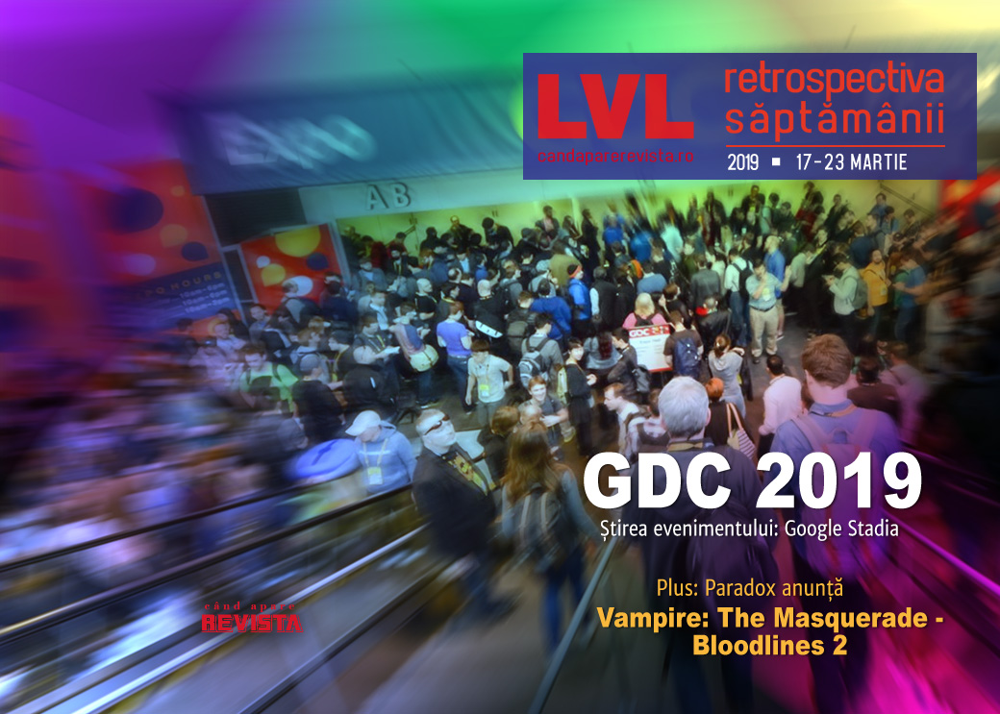

Retrospectiva săptămânii 17-23 martie 2019
Game Developers Conference 2019 aduce noutăți importante, dintre care cea mai remarcabilă e platforma de game streaming Google Stadia. Apoi avem un Oculus Rift nou, Epic Store aduce noi schimbări și exclusivități, printre care așteptatul The Outer Worlds, portări pe PC în premieră de la Quantic Dreams, niște demo-uri apetisante de la Unreal și Unity și diverse opinii interesante de la oamenii din industrie. S-a lansat în sfârști Sekiro: Shadows Die Twice, iar cireașa de pe tortul săptămânii e anunțul că vom primi Vampire: The Masquerade – Bloodlines 2.
Linkuri rapide:

Ştiri
GDC 2019
În perioada 18-22 s-a desfășurat Game Developers Conference 2019. Dintre evenimentele mai importante:
- Sumarul evenimentului (Variety, Shacknews)
- Google anunță Stadia, o platformă de game streaming ce va putea rula jocuri cu 60 fps până la o rezoluție 4K, și care se va lansa în 2019 în „select countries”. (Ars Technica, Waypoint, Polygon, The Verge, Destructoid, Eurogamer, Variety, GamesIndustry.biz). Detalii mai jos.
- Premiile GDC Awards: Return of the Obra Dinn a câștigat premiul la secțiunea joc independent, iar God of War a luat marele premiu „Game of the Year”. (Variety, PC Gamer, Shacknews, GamesIndustry.biz)
- O nouă versiune de Oculus Rift: (GamesIndustry.biz, Eurogamer, Games Informer)
- Un demo impresionant de la Unity și alte noutăți (PCGamesInsider.biz, DSOGaming , The Verge)
- Noutăți despre Steam de la Valve (DSOGaming , PC Gamer, Eurogamer, Variety, Gamasutra, Games Informer, Kotaku)
- Noutăți despre Epic Store și Unreal Engine de la Epic. Detalii mai jos.
Epic Games
- Următoarele exclusivități pe Epic Store, printre care The Outer World și Phoenix Point și portări în premieră pe PC pentru jocurile de la Quantic Dream (Ars Technica, Shacknews, DSOGaming , Destructoid), dar planurile de viitor includ renunțarea la exclusivități (Variety, The Verge)
- Schimbări pentru Epic Store, printre care reviews, wishlists, gifting (Variety)
- Epic Store a ajuns la 85 milioane de utilizatori de PC (Shacknews)
- Un program de burse în valoare totală de 100 de milioane de dolari (Shacknews, PC Gamer, Variety, GamesIndustry.biz)
- Serviciile online folosite de Fortnite vor fi disponibile gratuit tuturor dezvoltatorilor de jocuri (Variety)
- Câteva demo-uri pentru Unreal Engine (The Verge, DSOGaming , DSOGaming , Polygon)
Google Stadia
- Folosește Google Assistant pentru walkthroughs și ajutor în jocuri (Shacknews, Polygon, PC Gamer)
- Gamerii pot juca împreună cu youtuberii favoriți (Polygon, Shacknews, Shacknews)
- Va avea multiplayer cross-platform (Shacknews)
- Folosește o componentă de machine learning - Style Transfer - pentru a ajuta dezvoltatorii de jocuri
- Oferă posibilitatea de a salva starea jocului în orice moment și apoi de sharui această salvare cu un simplu link (Polygon)
- Va folosi un controller propriu, cu un layout asemănător celor de PlayStation (Shacknews, Variety, Polygon, The Verge)
- Google a înființat un studio de jocuri dedicat - Stadia Games and Entertainment - condus de Jade Raymond pentru a dezvolta jocuri proprii (Polygon, PC Gamer)
Primele impresii și detalii tehnice:
- Inside Google Stadia (Polygon)
- Google Stadia hands-on: streaming analysis and controller impressions (Eurogamer)
- Google Stadia specs: is this our first taste of next-gen? (Eurogamer)
- Google Stadia’s specs and latency revealed (PC Gamer)
- Hands on with Google Stadia: It works, but is that enough? (Ars Technica)
- What We Know And Don’t Know About Google’s New Gaming Platform Stadia (Kotaku)
- Doom On Stadia’s Input Lag Is Noticeable But Not Ruinous (Game Informer)
Opinii:
- Google announced some cool tech at its GDC keynote, but some massive, basic questions remain about its new Stadia games business (PCGamesInsider.biz)
- GDC Google Stadia: The questions looming after the reveal (GameDaily.biz)
- Google Stadia has promise, but GDC failed to address its biggest obstacles (GamesIndustry.biz)
- Google Stadia is wild, but it has some very lofty promises to keep (Finger Guns)
- Stadia offers a thrilling new vision, but are Google and gaming ready for each other? (Eurogamer)
- Stadia is about the future of YouTube, not gaming (The Verge)
- Google Stadia: what developers think of the game-streaming service (The Guardian)
- Opinion: Chez Stadia - Google’s new cloud platform (Gamasutra)
- Google’s Stadia looks like an early beta of the future of gaming (The Verge)
- Google Stadia can succeed if it follows Fortnite’s footsteps (GamesIndustry.biz)
- Would a Google Stadia subscription service be bad news for the industry? (GamesIndustry.biz)
- Google Stadia is a Net Neutrality Nightmare (Variety)
- Google Stadia Is Impressive — On Paper (PC Invasion)
- ProBeat: Google’s Stadia is all about the cloud and AI (VentureBeat)
- Google's Stadia is a Cool Idea…for the Year 2050 (USgamer)
Alte știri
- Heroes of the Storm renunță la loot boxes plătite cu bani reali. (PC Gamer, Kotaku)
- Fostul scenarist al Portal și Left 4 Dead, Chet Faliszek, își deschide propriul studio cu intenția de a crea jocuri co-op. (Eurogamer, Variety, Ars Technica)
- Nintendo a organizat o prezentare Nindie Direct dedicată jocurilor independente pentru Switch. (Polygon, Polygon, The Verge)
Articole (critică, dev, design)
- The Changing Face of Video Game Crowdfunding (Variety)
- Road to GDC: Curating Video Games (Variety)
- Video Games Are as Much Art as Film (GameSpace)
- Opened World: With Strangers (Haywire Magazine)
- Star Wars and the Pitfalls of Telling Adult Stories in a World Built for Children (Fanbyte)
- Pilot, lawyer, medic: meet the people who turned video game careers into real ones (The Guardian)
- It’s ironic, but gaming can be an escape from our hyper-connected, screen-filled life (The Guardian)
- The best games of 2019 (The Verge)
- Keep Newcomer-Friendly Sequels Coming (Games Informer)
- Games like Celeste and Hellblade show other devs how to get mental illness right (PCGamesN)
- We Need More Videogame Folklorists (Wired)
Actualitate
- Why I skipped GDC in 2019 (Cliffski’s Blog)
- The Best Indie Games of GDC 2019 (Games Informer)
- Is Cloud-Based Streaming Video Games’ Future? (Games Informer)
- Why Stadia can be the biggest shake of the video games industry in 15 years (Gamasutra)
Not-a-review
- Grand Theft Auto V Role-Playing Has Taken Over Twitch (Kotaku)
- Dawn of Man is the ideal city-builder if you hate micromanagement (PC Gamer)
- The Joy Of crap weather in Metro Exodus (RPS)
- Resident Evil 2 Brings the Original Game Design Back From The Dead (Unwinnable)
- How the frenetic jazz of Ape Out elevates its violence (RPS)
- I flew to the centre of the galaxy in Elite Dangerous, only to find it overrun with criminals (RPS)
- Mass Effect Trilogy (Critical Distance)
Industrie
GDC 2019
Jason Rohrer
Google Stadia
- Google Stadia: Phil Harrison answers our biggest questions (Polygon)
- The big interview: Phil Harrison and Majd Bakar on Google Stadia (Eurogamer)
- Phil Harrison: Stadia starts an "inevitable and one-way shift" away from consoles (GamesIndustry.biz)
- “We’re not declaring victory – we’re just starting” – what Google Stadia means for the future of gaming (PCGamesN)
- Google tries to reassure gamers about Stadia speed and latency concerns (Ars Technica)
- How much of gaming will be left after Google Stadia? (Polygon)
- Google Stadia chief predicts the cloud will be the game console of the future (The Verge)
Epic Games
Valve
Microsoft
Command & Conquer
Blizzard
Altele
- ‘No Man’s Sky’s’ Disastrous, Wonderful, Amazing Journey (Variety)
- Oculus: “It’s no longer a burden to get into virtual reality” (GamesIndustry.biz)
- Shadow interview: Stream your PC games from the cloud (Shacknews)
- ‘Pokemon Go’ Creator on Augmented Reality’s Massive Potential (Variety)
- Tim Schafer Talks Unionization, Streaming, And The Future Of Double Fine (Kotaku)
- Roblox on creating kinder communities (GamesIndustry.biz)
- Game source code is a teaching tool, not a trade secret, argues VGHF founder (Gamasutra)
- Rami Ismail: “We’re seeing Steam bleed… that’s a very good thing for the industry” (PCGamesN)
- Lual Mayen: From refugee to game developer (VentureBeat)
Alte articole
Istorie, retrospectivă
- Killzone 2 ten years on - a PS3 showcase that still looks stunning today (Eurogamer)
- This is How System Shock Came Back From The Dead (Games Informer)
- The Rise of the Zombie (Gamereactor)
- Darklands (The Digital Antiquarian)
- Splinter Cell: Pandora Tomorrow is the best Splinter Cell (VideoGamer)
Dev, making of, mecanici
- From Indie to AAA: Notes from a Game Writer (Gamasutra)
- How simple mechanics and vignettes inspired Florence (Gamasutra)
- ‘Tetris Effect’s’ Development Was Anything but Zen-Like (Variety)
- How Truck Simulator’s resident radio station became as big as the rigs (PCGamesN)
Design, world-building, artă
- GAME ART: JONAS ODELL’S I WAS A WINNER (2019) (GAMESCENES)
- Star Destroyers At Sunset (Kotaku)
Anunţuri şi lansări de jocuri
Anunţate
- I.G.I. Origins, un prequel-reboot al seriei Project I.G.I. din anii 2000 (Destructoid)
- Colecții aniversare Arcade, Castlevania și Contra de la Konami (Polygon, PC Gamer)
- Rad, un nou joc de la Double Fine (Destructoid, Games Informer)
- Beyond: Two Souls, Detroit: Become Human și Heavy Rain vor fi portate pe PC (Games Informer)
- Serialul Peaky Blinders va avea și un joc (PC Gamer)
- S.W.I.N.E. remaster HD (DSOGaming )
- Kenshi 2 (PC Gamer)
- Vampire: The Masquerade – Bloodlines 2 (TechRaptor)
- ShockRods, un nou shooter cu mașini de la creatorii lui Carmageddon (DSOGaming )
Acum cu dată de lansare
- Telltale’s The Walking Dead: ultimul episod apare pe 26 martie (Eurogamer)
- Tales of the Neon Sea: 30 aprilie (PC Gamer)
- Fade to Silence (iese din early access): 30 aprilie (GameSpace)
- Oxygen Not Included (iese din early access): luna mai (PC Gamer)
- My Friend Pedro: luna iunie (PC Gamer)
- Lost Ember: 19 iulie (DSOGaming )
- Kill La Kill: 25 iulie (Games Informer)
- Control: 27 august (Wccf tech)
- Life is Strange 2 episoadele 3-5: 9 mai, 22 august, 3 decembrie (Shacknews)
Anulate
- The Culling: Origins se închide pe 15 mai (PC Gamer)
Lansate
- 18 martie: Satisfactory (early access) (Epic Store)
- 21 martie: We. The Revolution (Steam, gog.com)
- 22 martie: Sekiro: Shadows Die Twice (Steam)
Prăvălii de jocuri
Știri
- You can now buy games straight from a developer’s Discord server (PC Gamer)
- Epic offers support for third-party key sales – but not for exclusives (GamesIndustry.biz)
Jocuri noi în catalog
Jocuri gratis și free weekends
- World of Warcraft is free for returning players this weekend (PC Gamer)
- Free games: XCOM 2 is free this weekend, and all the DLC is half-price (PCGamesN)
- Space station mystery-adventure Tacoma is free on the Humble Store (PC Gamer)
- Cities: Skylines goes free on Steam this weekend (Shacknews)
Reduceri și promoții
- Get Human: Fall Flat, Bomber Crew and more in the latest Humble Bundle (PC Gamer)
- GOG Spring Sale discounts more than 600 games (PC Gamer)
- Xbox One’s ‘Critcally Acclaimed Sale’ offers money off the console’s best-reviewed games (Eurogamer)
- Best PC gaming deals of the week – 22nd March 2019 (RPS)
- Weekend Console Download Deals for Mar. 22: First Kingdom Hearts 3 sale (Shacknews)
- Weekend PC Download Deals for Mar. 22: Free Tacoma (Shacknews)
Retrospectiva săptămânii este rubrica duminicală în care trecem în revistă evenimentele săptămânii de pe frontul de gaming: știri şi articole (scrise de alții, bineînțeles, că e mai ușor aşa), industrie, lansări, oferte de jocuri, toate numai de savurat la cafeaua de duminică dimineața.
De asemenea, rubrica e deschisă oricui vrea și poate contribui. Dacă ai citit vreun articol sau vreo știre interesantă și crezi că merită incluse în retrospectiva săptămânii, te așteptăm pe forum pe unul dintre topicurile dedicate: Știri, Articole, Gaming România].